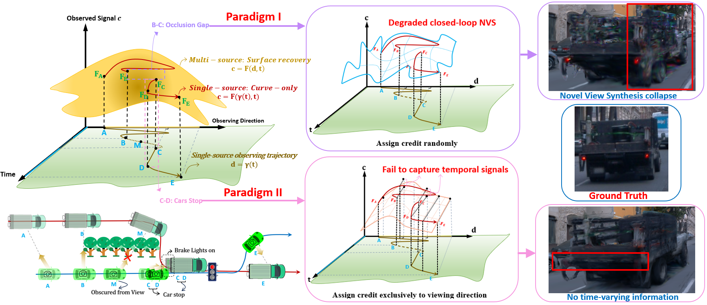

The Hidden Rendering Degradation
in 4D Driving Scene Reconstruction
Project Page
This work is under double-blind review; author information is withheld.

Abstract
High-fidelity street scene reconstruction is pivotal for end-to-end autonomous driving simulation, where novel-view synthesis and time-varying information modeling are the two key elements of 4D reconstruction tasks. Contrary to common belief, existing methods actually suffer from severe hidden rendering degradation and fail to achieve them simultaneously. We first establish an information-geometric diagnostic framework, revealing that this limitation stems from a credit assignment dilemma between spatial and temporal parameters. Specifically, the deterministic coupling between observing viewpoint and time in single-source data collecting creates a low-rank structure that induces massive null-space ambiguity between view-dependent and time-varying components. Temporal information overshadows spatial cues, causing the estimation variance of spatial parameters to diverge. To address this issue, we propose a hierarchical training method designed to restore spatial identifiability. It prioritizes the integrity of spatial representations by securing them in an initial stage, then restricts temporal updates to the spatial null space, enabling proactive credit assignment. A temporal regularization strategy is proposed to further refine the temporal solution space by imposing a smoothness constraint based on the physical prior of consistent appearance evolution. Experiments demonstrate that our method eliminates the hidden rendering degradation, maintaining stable NVS capabilities while modeling time-varying information.
Comparison with Existing Methods
Existing methods vs. ours (scene 073).
Existing methods vs. ours (additional sequence).
Problems of Existing Methods

Two existing paradigms
Paradigm I vs. Paradigm II (scene 060).
Paradigm I vs. Paradigm II (scene 073).
Open-loop evaluation looks deceptively good
Existing methods perform well in open-loop evaluation (scene 060) — merely open-loop overfitting.
Open-loop evaluation (scene 073).
Poor novel-view synthesis
Severe morphological collapse in NVS (scene 060).
Poor NVS on an additional sequence.
Temporal dynamics are not captured
Paradigm II cannot capture temporal dynamics such as car lighting.
Ablation Study


Effect of the hierarchical training method
Existing training vs. ours with proactive credit assignment (scene 060).
Existing training vs. ours with proactive credit assignment (scene 073).
Effect of the temporal regularization strategy
Proactive credit assignment alone vs. with temporal regularization (scene 060).
Proactive credit assignment alone vs. with temporal regularization (scene 073).
Fourier basis vs. B-spline basis
Truncated Fourier basis causes low-frequency flickering; B-splines eliminate it (scene 060).
Fourier basis vs. B-spline basis (scene 073).
Citation
@article{anonymous2025hidden,
title = {The Hidden Rendering Degradation in 4D Driving Scene Reconstruction},
author = {Anonymous},
journal = {Under review},
year = {2025}
}